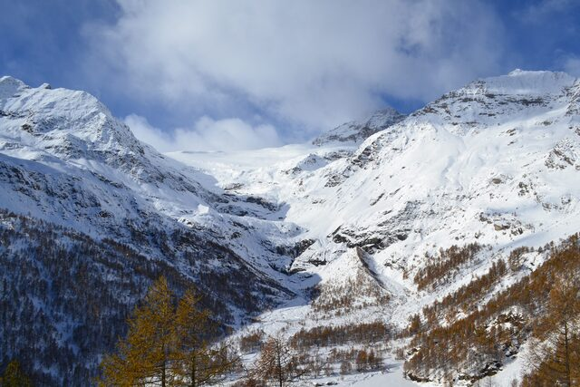
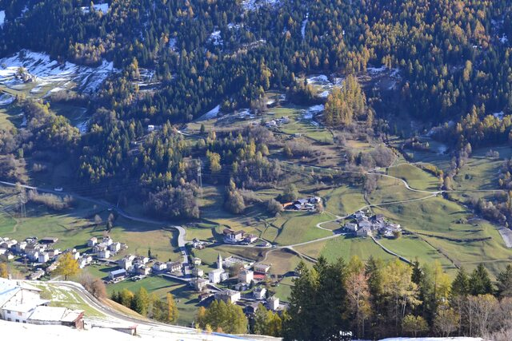
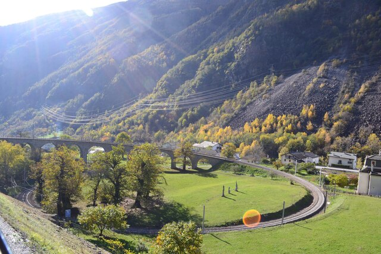
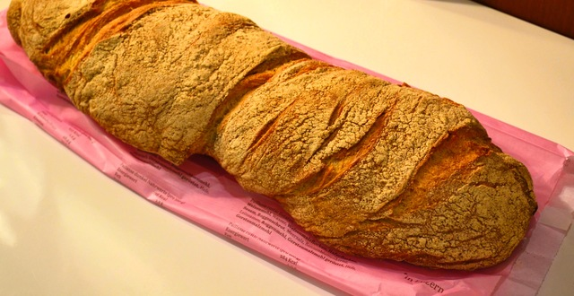
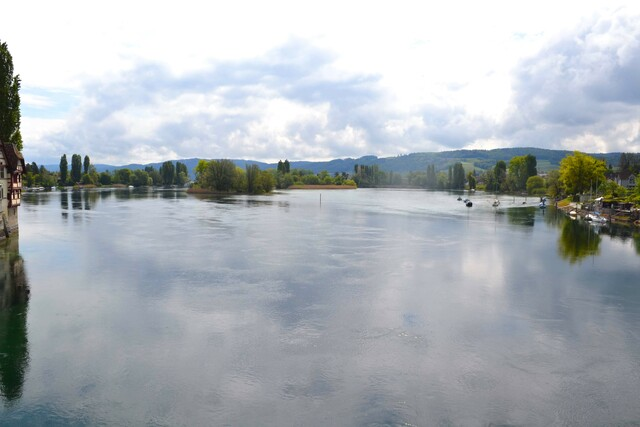
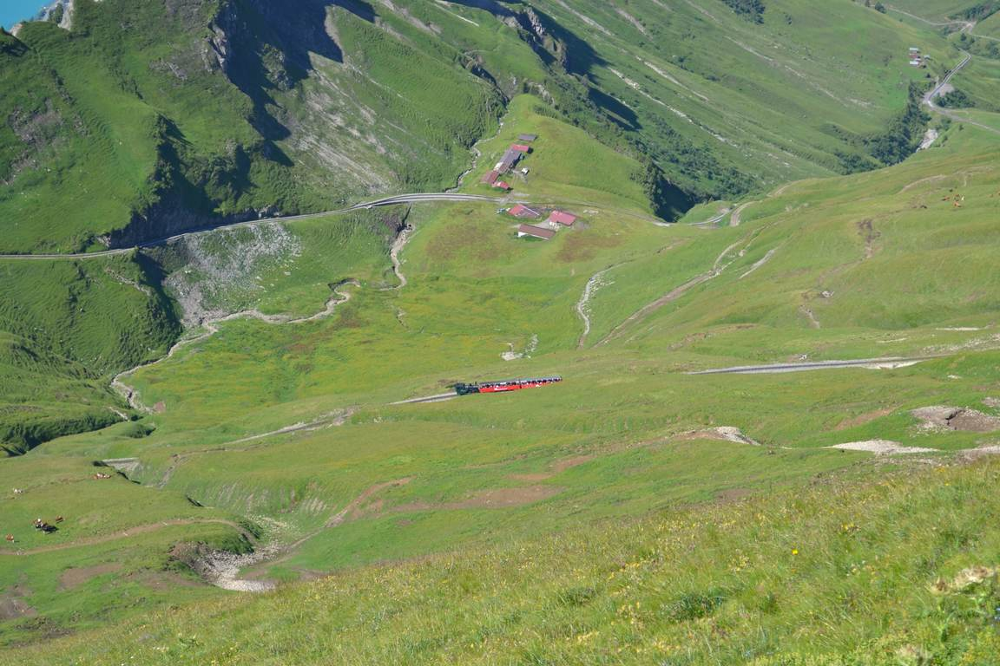

葡萄畑で唯一世界遺産に登録されているレマン湖畔のラヴォー地区。絹のような細い雨が湖畔の急斜面に一面に黄色く色付いた葡萄畑とぽつぽつと点在する家々の屋根瓦をしっとりと濡らしているのが美しい。遠くにローザンヌの街が見える。
レマン湖畔の街。オリンピック博物館のイメージしかなかったですが一歩裏路地に入ると素敵な風景がたくさんある街だった。フランスが近いのでフランス建築の影響を感じる建物が多い。スイスのドイツ/イタリアに近い地域はドイツ/イタリア建築の影響があって、スイスを旅していると文化は連続的に混じり合うものなのだと感じる。


快晴のスイスアルプスは美しい、これに尽きる。4000m級の山々、氷河、山上湖の景観が車窓に広がるスイスアルプスの絶景路線。ルツェルンを朝4時50分に出発してベルニナ線でイタリアのティラーノまで往復して帰ってきたのが21時だった。15時間電車に乗ってた 笑

ベルニナ線の最高地点はOspizio Bernina駅で、標高2200m、この日の気温はマイナス3度。ここからイタリア側の終着駅のティラーノまで一気に下っていきます。

Alp Grum駅から望むパリュ氷河。



スイスの湖畔の街は美しい。何もかもが透き通ってしまいそうな秋の金曜の夕暮。
スイスに来たら食べたいのが Pain Paillasse（パン・パイアス）。ジュネーブのパン屋さんが生み出した高加水パンで大胆にねじった成形が特徴。材料は小麦粉、水、塩、イースト、モルトだけ。Bachmannというパン屋さん（元々はチョコレート屋さん？）の48時間低温熟成のものが本当に美味しい。

この日はパリからミュンヘンまで各駅停車で行った。 パリを朝の6時に出発して、どこまでも続く牧草地の地平線から太陽が上るのを眺め、バーゼルを経由してミュンヘンに着いたのは夜7時。
ドイツ・フランス・スイスの三国国境に位置する都市バーゼル。 ゆったり流れるライン川の畔に並ぶ街並みが美しい。 夏の時期は川岸近くを泳いで下ることができるのだが、 想像以上に流れが速く、ロープなどの仕切りもないうえに途中に橋桁があったり渡し船が運行してたりするのでそれらを上手に避けて「流されていく」必要がある。 相当泳ぎに自信がないと危ないと思うのだが、 この時期スイスのいろんな街で人々が川に流されているのを見かけるので、スイスっ子にとっては定番のレジャーなのだろう。
5分あれば通り抜けられてしまう小さな街に、スイスらしい鱗型の赤錆びた屋根瓦と繊細なフレスコ画で彩られた家々がぎゅっと凝縮されている。

ドイツの河川の名前はたいてい男性名詞だがライン川だけは女性名詞である。 やわらかな波紋を折り重ね陽の光を揺らしながら流れゆく水面が美しい。

ユングフラウへの麓の街インターラーケン。
たまにスイスやオーストリアの山間の村で青色に乳白色を混ぜたような美しい色の川を見かけるが、 これは川の水が氷河を削ったときにできた小さな岩屑が溶け込むためらしい。 やがてこの岩屑は流れとともに沈殿し水は澄んでいく。
インターラーケンからユングフラウへ向かうには東と西の二つのルートがある。 西ルートの途中にあるのがラウターブルンネン。 氷河に削られてできた深いU字谷に位置する村でたくさんの滝がある。
ゼラニウムに彩られた軒先が素晴らしい。
シュタウプバッハの滝。遊歩道を登ると滝の裏側に回り込むことができる。 落差が300メートルあり、水が崖を落ちきる前に霧となって消えてしまう。 かつてゲーテはこの滝の近くに住んで執筆していたらしい。
グリンデルワルトの周辺には氷河を拝める散策コースがいくつもあるが、 山歩きの初心者にも手軽でかつもっとも景色が素晴らしいのが、 メンリッヒェン〜クライネ・シャイデックのコースではないかと思う。 眼前にアイガーの北壁とユングフラウを拝みながら、 クライネ・シャイデックまで1時間半のお散歩。
この日は完璧なまでの快晴だった。 自然を楽しむには天気が良いことが絶対の条件である。 スイスや南ドイツの天気は変わりやすく前日の天気予報があまり当てにならないので、 当日に雨雲レーダーで雲の動きを追いながら目的地を選ぶ。
ブリエンツからブリエンツ・ロートホルン鉄道で2244メートルの山頂まで登ることができる。 カウベルの鳴り響く牧草地の斜面をおもちゃのような真っ赤なトロッコでゆっくりと登っていく。 蒸気機関車がプッシュで押して登っていくのは、万が一連結器が外れた場合の安全策のようだ。

標高がどんどん上がっていく。眼下に広がるのはブリエンツ湖。
ロートホルンの山頂。奥に見えるのはアイガーとユングフラウ。 真夏の涼しい山頂を数々の高山植物の花々が彩る。
ブリエンツ湖畔の小さな街、ブリエンツ。 美しい山と湖に囲まれいかにもスイスらしい風景が広がっている。

ベルンはスイスの首都だが、人口14万人ほどの小さな街である。 大きく湾曲したアーレ川に囲まれるように形成された旧市街は世界遺産に登録されており、 中世ヨーロッパの美しい街並みが残っている。
ツィットグロッゲという時計塔。ひとつのゼンマイ式装置で作動しているらしい。
石の屋根瓦が雨に濡れているのがとてもいい。
バーデン・ヴュルテンベルクチケットで行けてしまうが、この街はスイス。 お昼ごはんを食べようと思ったら、ユーロが使えなくてその事実に気づく。 南ドイツからスイスに入ると屋根の色が変わるように思う。 スイスの屋根は焦げ茶色が少しくすんでいる（味わいがあって好きだ）。
ぶどう畑の丘の上にムノート城がある。
ムノート城の方から眺めるとこんな感じ。街の向こうを流れるのはライン川だ。
チューリッヒとリンダウの間にあるスイスの街、ザンクト・ガレン。 旧市街の街並みが美しく、ザンクト・ガレン修道院は世界遺産に登録されている。 ザンクト・ガレン修道院の図書館は、一面がロココ美術に装飾されており非常に美しい （写真撮影はできなかった）。 修道院内部はバロック様式のものだが、円形の重なるアーチや緑色を基調にしたスタッコ装飾など、 ドイツのバロック教会とは違った趣がある。
チューリッヒから電車で30分ほどの温泉保養地。バーデンには中世の面影がよく残されている。
ハプスブルク家のお城であったシュタイン城塞の跡。 中世のお城は、現存しているものより朽ち果てているもののほうが好きだ。 時間が作り出した美しさがある。 ここの城壁に腰掛けて村上春樹をしばらく読んだ。

斜面の街に作られたバーデンの路地は、険しく細く、入り組んでいて、そして美しい。
こちらはリマト川にかかる木造の橋。 中世の様式らしいが、車が通れて屋根のある木造の橋というのは珍しいらしい。
チューリッヒといえばヨーロッパの世界都市だが、 旧市街の様子は牧歌的で、村の農村共同体がそのまま大きくなってできた都市のようなのどかさを感じる街だ。 チューリッヒの建物はグレーがかった白壁のものが多い。 空の青、チューリッヒ湖の青、森の緑、チューリッヒ湖の向こうに広がるアルプスの白。 コントラストがとても美しい街だった。
チューリッヒ中央駅。 ここのパン屋さんで買った「パン・パイアス」がとてもおいしかった。